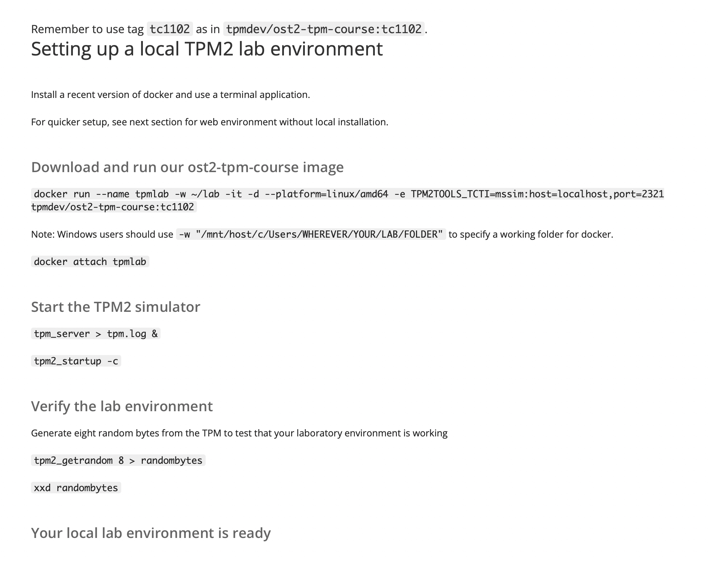
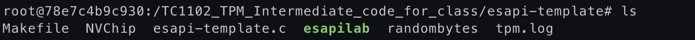
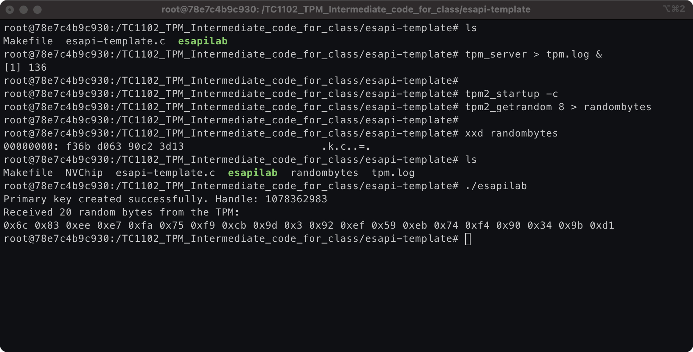

Primary key generation using ESAPI
1. Initialize the ESAPI Context
Ensure the ESAPI context is initialized before any TPM operations.
ESYS_CONTEXT *context;
TSS2_RC rc = Esys_Initialize(&context, NULL, NULL);
if (rc != TSS2_RC_SUCCESS) {
// Handle initialization error
}
2. Set Up the inSensitive Structure
The inSensitive structure holds the authorization value for the TPM key, usually a password.
TPM2B_SENSITIVE_CREATE inSensitive = {0};
TPM2B_SENSITIVE sensitive = {0};
// Set up authorization value (e.g., password)
sensitive.sensitive.data.size = strlen("your_password");
memcpy(sensitive.sensitive.data.buffer, "your_password", sensitive.sensitive.data.size);
inSensitive.sensitive = sensitive;
3. Define the inPublic Structure
Set the parameters for the TPM key, including key type, hash algorithm, and object attributes.
TPM2B_PUBLIC inPublicEcc = {0};
// Define the key type and parameters
inPublicEcc.publicArea.type = TPM2_ALG_ECC;
inPublicEcc.publicArea.nameAlg = TPM2_ALG_SHA256;
// Set up object attributes (example: signing and encryption key)
inPublicEcc.publicArea.objectAttributes = TPMA_OBJECT_DECRYPT | TPMA_OBJECT_SIGN_ENCRYPT | TPMA_OBJECT_FIXEDTPM | TPMA_OBJECT_FIXEDPARENT | TPMA_OBJECT_SENSITIVEDATAORIGIN;
// Define the ECC parameters
inPublicEcc.publicArea.parameters.eccDetail.symmetric.algorithm = TPM2_ALG_NULL;
inPublicEcc.publicArea.parameters.eccDetail.scheme.scheme = TPM2_ALG_NULL;
inPublicEcc.publicArea.parameters.eccDetail.curveID = TPM2_ECC_NIST_P256;
inPublicEcc.publicArea.parameters.eccDetail.kdf.scheme = TPM2_ALG_NULL;
// Set the size of the X and Y points (ECC specific)
inPublicEcc.publicArea.unique.ecc.x.size = 32; // Example size for NIST P-256
inPublicEcc.publicArea.unique.ecc.y.size = 32;
4. Set Up Additional Parameters
Prepare any additional parameters required for the key creation.
TPM2B_DATA outsideInfo = {0}; // Arbitrary data for sealing
TPML_PCR_SELECTION creationPCR = {0}; // PCR selection (empty if not used)
5. Create the Primary Key
Invoke Esys_CreatePrimary to create the primary key.
TPM2B_PRIVATE outPrivate = {0};
TPM2B_PUBLIC outPublic = {0};
TPM2B_DATA creationData = {0};
TPM2B_DIGEST creationHash = {0};
TPMT_TK_CREATION creationTicket = {0};
ESYS_TR primaryHandle;
rc = Esys_CreatePrimary(
context,
ESYS_TR_RH_OWNER,
ESYS_TR_PASSWORD,
ESYS_TR_NONE,
ESYS_TR_NONE,
&inSensitive,
&inPublicEcc,
&outsideInfo,
&creationPCR,
&primaryHandle,
&outPublic,
&creationData,
&creationHash,
&creationTicket
);
if (rc != TSS2_RC_SUCCESS) {
// Handle error
}
6. Clean Up
Flush the context and release any allocated resources.
rc = Esys_FlushContext(context, primaryHandle);
if (rc != TSS2_RC_SUCCESS) {
// Handle error
}
Esys_Finalize(&context);
RSA Key Example
For an RSA key, the key creation setup would be similar but with RSA-specific parameters:
TPM2B_PUBLIC inPublicRsa = {0};
// Define the key type and parameters
inPublicRsa.publicArea.type = TPM2_ALG_RSA;
inPublicRsa.publicArea.nameAlg = TPM2_ALG_SHA256;
// Set up object attributes (example: signing and encryption key)
inPublicRsa.publicArea.objectAttributes = TPMA_OBJECT_DECRYPT | TPMA_OBJECT_SIGN_ENCRYPT | TPMA_OBJECT_FIXEDTPM | TPMA_OBJECT_FIXEDPARENT | TPMA_OBJECT_SENSITIVEDATAORIGIN;
// Define RSA parameters
inPublicRsa.publicArea.parameters.rsaDetail.symmetric.algorithm = TPM2_ALG_NULL;
inPublicRsa.publicArea.parameters.rsaDetail.scheme.scheme = TPM2_ALG_NULL;
inPublicRsa.publicArea.parameters.rsaDetail.keyBits = 2048; // Example RSA key size
inPublicRsa.publicArea.parameters.rsaDetail.exponent = 0; // Default exponent
Here's the complete code for primaryKeyGen.c
/*
* This file is free software; you can redistribute it and/or modify
* it under the terms of the GNU General Public License as published by
* the Free Software Foundation; either version 2 of the License, or
* (at your option) any later version.
*
* This file is distributed in the hope that it will be useful,
* but WITHOUT ANY WARRANTY; without even the implied warranty of
* MERCHANTABILITY or FITNESS FOR A PARTICULAR PURPOSE. See the
* GNU General Public License for more details.
*
* You should have received a copy of the GNU General Public License
* along with this file. If not, see <https://www.gnu.org/licenses/>.
*/
#include <stdlib.h>
#include <stdio.h>
#include <tss2/tss2_esys.h>
#include <tss2/tss2_tctildr.h>
#include <tss2/tss2_tcti.h>
#define RANDOM_BYTES_COUNT 20
int main() {
TSS2_RC ret;
TSS2_TCTI_CONTEXT *tcti;
/* Do not forget to start the TPM simulator before launching this app */
ret = Tss2_TctiLdr_Initialize("mssim:host=127.0.0.1,port=2321", &tcti);
if (ret != TSS2_RC_SUCCESS) {
printf("\nError: Tss2_TctiLdr_Initialize\n");
return 1;
}
/* Initialize the ESAPI context */
ESYS_CONTEXT *ctx;
ret = Esys_Initialize(&ctx, tcti, NULL);
if (ret != TSS2_RC_SUCCESS) {
printf("\nError: Esys_Initialize\n");
return 1;
}
/* Start TPM */
ret = Esys_Startup(ctx, TPM2_SU_CLEAR);
if (ret != TSS2_RC_SUCCESS) {
printf("\nError: Esys_Startup\n");
Esys_Finalize(&ctx);
return 1;
}
/* Set up the inSensitive structure */
TPM2B_SENSITIVE_CREATE inSensitive = {0};
inSensitive.sensitive.userAuth.size = 0; // No authorization data
inSensitive.sensitive.data.size = 0; // No extra data
/* Set up the inPublic structure */
TPM2B_PUBLIC inPublic = {0};
inPublic.publicArea.type = TPM2_ALG_ECC;
inPublic.publicArea.nameAlg = TPM2_ALG_SHA256;
inPublic.publicArea.objectAttributes = TPMA_OBJECT_DECRYPT | TPMA_OBJECT_SIGN_ENCRYPT | TPMA_OBJECT_FIXEDTPM | TPMA_OBJECT_FIXEDPARENT | TPMA_OBJECT_SENSITIVEDATAORIGIN;
inPublic.publicArea.parameters.eccDetail.symmetric.algorithm = TPM2_ALG_NULL;
inPublic.publicArea.parameters.eccDetail.scheme.scheme = TPM2_ALG_NULL;
inPublic.publicArea.parameters.eccDetail.curveID = TPM2_ECC_NIST_P256;
inPublic.publicArea.parameters.eccDetail.kdf.scheme = TPM2_ALG_NULL;
/* Additional setup */
TPM2B_DATA outsideInfo = {0}; // Arbitrary data for sealing
TPML_PCR_SELECTION creationPCR = {0}; // PCR selection (empty if not used)
TPM2B_PUBLIC *outPublic = NULL;
TPM2B_CREATION_DATA *creationData = NULL;
TPM2B_DIGEST *creationHash = NULL;
TPMT_TK_CREATION *creationTicket = NULL;
ESYS_TR primaryHandle;
/* Create the primary key */
ret = Esys_CreatePrimary(
ctx,
ESYS_TR_RH_OWNER,
ESYS_TR_PASSWORD,
ESYS_TR_NONE,
ESYS_TR_NONE,
&inSensitive,
&inPublic,
&outsideInfo,
&creationPCR,
&primaryHandle,
&outPublic,
&creationData,
&creationHash,
&creationTicket
);
if (ret != TSS2_RC_SUCCESS) {
printf("\nError: Esys_CreatePrimary\n");
Esys_FlushContext(ctx, primaryHandle);
Esys_Finalize(&ctx);
return 1;
}
printf("Primary key created successfully. Handle: %u\n", primaryHandle);
/* Get random data */
TPM2B_DIGEST *random_bytes;
ret = Esys_GetRandom(ctx, ESYS_TR_NONE, ESYS_TR_NONE, ESYS_TR_NONE,
RANDOM_BYTES_COUNT, &random_bytes);
if (ret != TSS2_RC_SUCCESS) {
printf("\nError: Esys_GetRandom\n");
Esys_FlushContext(ctx, primaryHandle);
Esys_Finalize(&ctx);
return 1;
}
if (random_bytes->size == RANDOM_BYTES_COUNT) {
printf("Received %u random bytes from the TPM:\n", random_bytes->size);
for (int i = 0; i < random_bytes->size; i++) {
printf("0x%x ", random_bytes->buffer[i]);
}
printf("\n");
} else {
printf("\nInsufficient number of random bytes\n");
printf("Expected: %u. Available: %u.\n",
RANDOM_BYTES_COUNT, random_bytes->size);
}
/* Clean up */
Esys_FlushContext(ctx, primaryHandle);
Esys_Finalize(&ctx);
return 0;
}
To compile this code, first you will have had to set up the lab.

After the lab has been set,
docker run --platform=linux/amd64 -it -d -e TPM2TOOLS_TCTI=mssim:host=localhost,port=2321 0ffabc
In your it will be the same name you provided when downloading the docker image
docker attach tpmlab
tpm2_startup -c
To verify if it's running, run the command $tpm2_startup -c
pm2_getrandom 8 > randombytes
This command ⬇️
xxd randombytes
should return you this 00000000: f36b d063 90c2 3d13 .k.c..=.
Once you are in the lab server, in the /lab path, you will see these folders, which will be visible only after the local env is able to talk to the docker.

Now it's time to compile the code
There's already a Makefile in the /lab subpath,
$make
./esapilab
Which looks something like this
